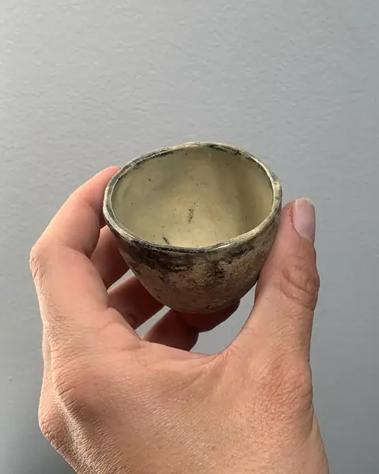
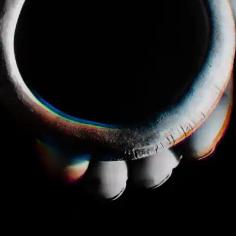
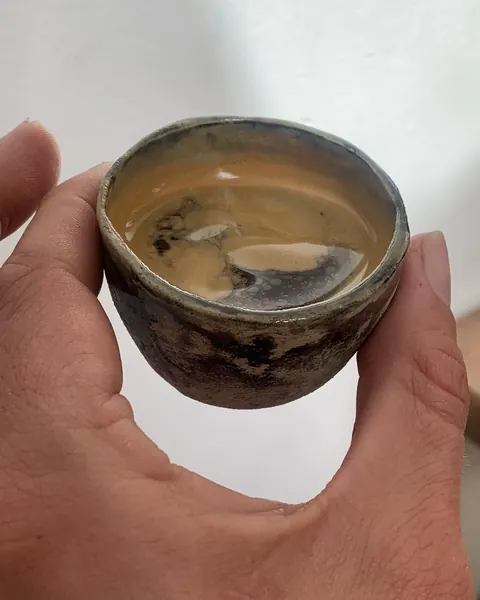
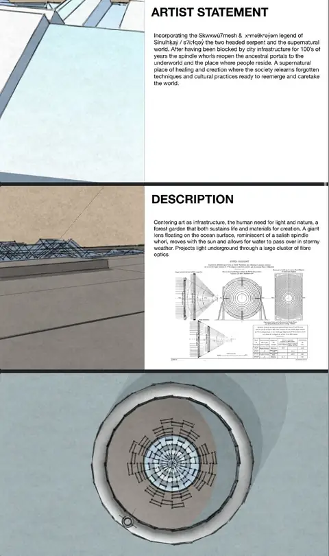

To Go
Lost Coffee
Objects, spaces, light and sound as one practice. Vancouver.












Mothers Moniker and Lost Coffee.
Lost Coffee
Mothers Moniker
Lost Coffee
Lost Coffee
Lost Coffee
Lost Coffee
Mothers Moniker on SpotifyLost Coffee on SpotifyLost Coffee on Apple MusicTo Go on YouTube
Sound licensing · imjamesgill@gmail.com